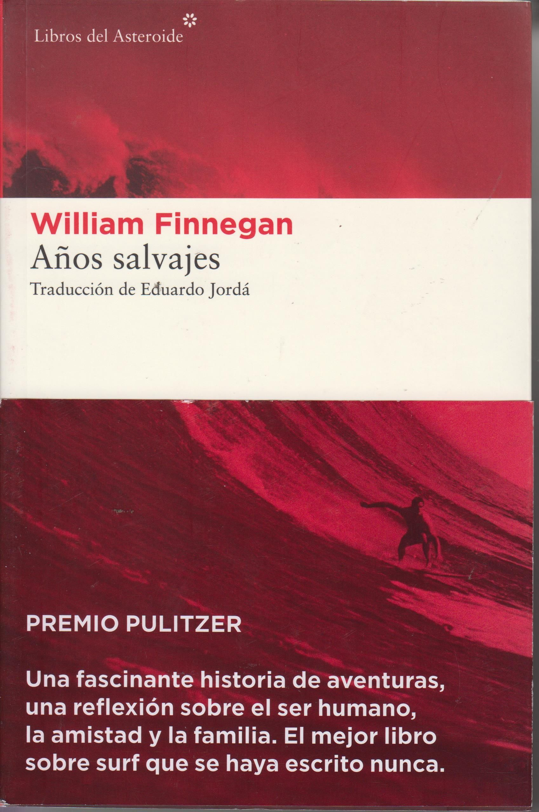
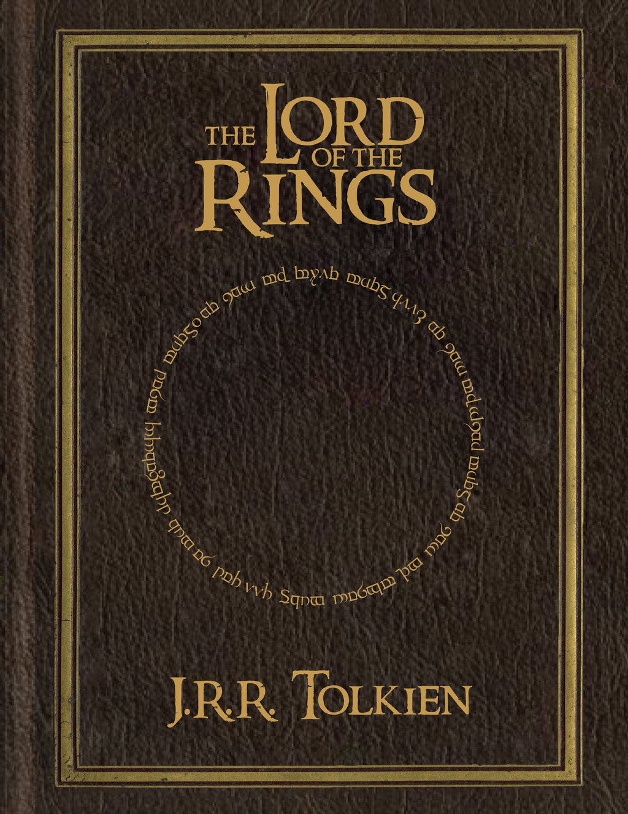
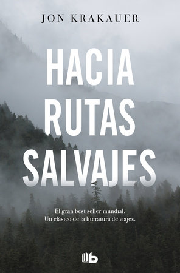
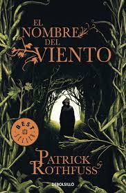

About Me
Hello there, my name is Aritz, let me introduce my self and explain what all this is.
I am a 21 year old man from the north of Spain. I have studied a degree in software development and have jumped from one job to another. Something was wrong with me, I was not able to face the work routine with enthusiasm and motivation. After much introspection I decided to quit my job as a programmer and start a personal project that I wanted to do for a long time. A friend once told me that you had to stay true to yourself.
I've always loved adventure stories. The idea of wandering from one place to another in the wilds has awakened in me immemorial nostalgia. I also think I am quite lost in life. I have gone through that moment of doubt and uncertainty in which one does not really know what the meaning of all this is. I have had a really bad time and this has been a large part of the origin of my personal discomfort.
It is because of all this that I feel that the time has come to change. I intend to dedicate myself to traveling and wandering for a while. I want to know new cultures, people, languages, places ... I have to search, I don't know very well what, but although it may seem stupid, I feel that there is something waiting to be found, perhaps my truth, and the first step is to search, blindly. There is something exciting about facing all the uncertainty of living like this for a while. It's a bit risky, but I think it's worth it. I need a greater perspective on life, I have to organize my ideas.
I have decided to open this website for various reasons. The main reason is for not letting go of my passion for technology and keeping myself updated. Practically every day I am reading about new concepts and tinkering with some new technology, so I hope to use this medium to not stop learning. I love reading and talking about topics of my interest, about my passions, about philosophical concepts ... who knows, maybe I will also write about ideas and reflections that come to mind. And at the same time I practice my English, which I really need.
In short, this is a personal space in which I plan to publish posts, photos, projects and some other thing that I feel like. I appreciate that you have read this far.
Aritz
My 5 favourite books




